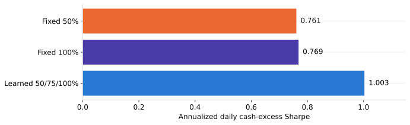
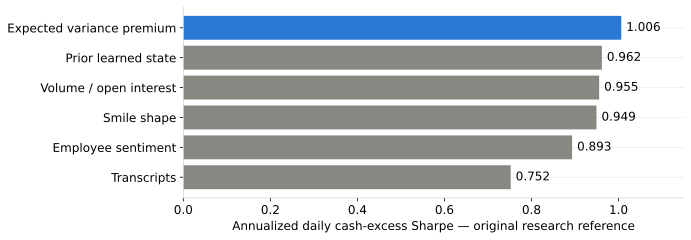

Advanced Statistical Arbitrage with Reinforcement Learning
From equity pairs to learned sizing and management of actual option contracts
Ning & Lee (2024): swap two hand-tuned pieces for two learned ones
Pairs trading has two phases — the paper replaces the traditional tool in each
| Phase | Traditional approach | This paper |
|---|---|---|
| Part 1 · Which spread to trade | Hand-fit B (Distance Method or OU) | EMRT — B chosen to minimize empirical reversion time |
| Part 2 · When to trade it | Fixed threshold rule (e.g. trade at ±1σ) | Q-learning — a policy learned from experience |
EMRT: average time from a big swing back to the mean
Find the meaningful peaks and troughs, time each one back to the mean line, average the times
Trading as an MDP: state, action, reward
The agent trades the fixed spread Xt = S1 − B*S2, one unit at a time
Action
- {sell −1, hold 0, buy +1}
- Flat → buy or hold; long → sell or hold; never short
- The state carries no level information — only the shape of recent moves.
- The agent is a price-taker: its trades don't move the spread.
Q-learning: from one-step rewards to a 256 × 3 table
Each reward only looks at today; the future enters through the next state's Q-value
Rt+1
Reward for today's action
Gt = Σk γk Rt+k+1
= Rt+1 + γGt+1 (random)
Q(s,a) = E[Gt | s, a]
One fixed number per cell
Why the agent trains on simulated spreads
The reward needs something you never observe in real markets
Problem
- The reward uses the true mean θ — unknown on real data
- One real price path is far too little data to fill 256 × 3 cells
Fix
- Simulate 10,000 one-year OU paths with known θ (μ=1, θ=1, σ=0.1)
- Train the Q-table there, then trade the real 2023 spread with it
- All headline results that follow are on real stock data; only training is synthetic.
RL wins on daily Sharpe in every pair
10 US sector pairs · B fit on 2022, traded in 2023 · daily closes from Yahoo Finance


- Benchmarks: Distance Method (B=1, trade at ±1σ) and OU trading (OU-fit B, trade at ±0.5σeq).
- Best daily Sharpe (DailySR) in 10 / 10 pairs. Mean daily Sharpe: DM 0.024, OU 0.047, RL 0.100.
- Best or tied-best max drawdown in 9 / 10 pairs. Negative DailySR entries (e.g. V-MA, PPG-SHW under DM) are real — those benchmark strategies lost money on those pairs.
Our extension: contract-level option relative value
Three current P25 strategies, reported separately with their own controls
| Current strategy | Annualized excess Sharpe | Entries |
|---|---|---|
| 30-day learned sizing + management | 1.029 | 212 |
| Six-month conservative fitted-Q management | 0.610 | 207 |
| Native one-year forecast + learned sizing | 0.313 | 276 |
2018–29 August 2025; actual contract accounting at $10m. These are separate researched strategies, not maturity-only ablations.
Trade the contracts; measure returns against cash
Actual puts selected by expiry and delta, with a shared cash-and-stock ledger
| Item | Contract-level convention |
|---|---|
| Instrument | Same option type; target absolute delta 0.25 |
| Initial neutrality | Integer contract vega matched within 10%; daily stock delta hedge |
| Actual costs | $0.03 / option contract + 0.1 vol point per leg; stock execution 1 bp |
| Financing | Floating cash return; stock borrow spread 0.5% |
| Metric | Daily cash-excess Sharpe × sqrt(252), sample standard deviation |
$10m funded equity. Vega is matched at entry, not continuously. Management pays additional costs when it trades.
Separate the trading signal from the allocation decision
Broad research universe; each maturity keeps its own economic entry definition
- Short-dated P25 state adds expected variance premium, historical normalization and RV / IV ratios.
- Relative-value, profitability memory and observable pair-risk inputs determine the qualified proposals.
- Compare fixed and learned sizes on common signals, contracts, costs and risk limits.
- The new one-year entry study independently forecasts next-year variance and generates monthly opportunities.
Learn size within a focused strategy
Use precise algorithm labels: contextual allocation and sequential management are distinct
- 30-day sizing: tree states plus direct policy search; actions are 50%, 75% or 100%.
- Six-month management: fitted Q learns weekly hold, half-size or close decisions.
- New one-year sizing: quarterly completed-history fits choose 0%, 25%, 50% or 100%.
- Execution remains subject to quotes, integer contracts and common account risk checks.
Adaptive sizing improves the fixed-vega controls
Same qualified proposals; 2018–29 August 2025 at $10m

| Sizing | Entries | Above-cash dollars |
|---|---|---|
| Fixed 50% | 263 | $248,315 |
| Fixed 100% | 133 | $272,338 |
| Learned sizing | 212 | $322,637 |
Exit decisions help some maturities more than others
Hold versus learned management, using the controls defined within each study
| Maturity | Hold Sharpe | Managed Sharpe | Intervention |
|---|---|---|---|
| 30-day | 1.003 | 1.029 | Trim / paired exit |
| 90-day | -0.324 | 0.025 | Trim / paired exit |
| Six-month | 0.592 | 0.610 | Conservative fitted Q |
- The 90-day locked comparison keeps the original 116 entries.
- Six-month entry is fixed 50%; learned management adds a modest improvement.
A native long-horizon signal supports a small sizing gain
Forecast next-year variance; do not reuse short-dated entries
| One-year policy | Sharpe | Entries |
|---|---|---|
| Forecast direction; fixed 50% | 0.254 | 580 |
| Forecast direction; learned size / skip | 0.313 | 276 |
| Same learned skips; fixed 50% | 0.273 | 281 |
| Learn direction and size together | -0.050 | 316 |
The sizing-only gain versus matched fixed 50% is +0.040; its 252-session bootstrap 95% interval is approximately [-0.099, +0.203].
The downside-put signal does not transfer uniformly
Earlier smile experiment: separate strike regions, not extra actions in one policy
| Instrument / policy | Annualized excess Sharpe |
|---|---|
| 25-delta puts, downside | 0.792 |
| 75-delta puts, upside strike | 0.289 |
| 25-delta calls, upside strike | 0.018 |
- The opposite wing was weaker under the tested signals and quote screens.
- The current 30-day, six-month and one-year strategies all target 25-delta puts.
Profits and Sharpe vary materially across years
Current managed 30-day, conservative six-month, and native one-year checkpoints
| Year | 30D return | 30D above cash (pp) | 30D Sharpe | 6M Sharpe | 1Y Sharpe |
|---|---|---|---|---|---|
| 2018 | 2.14% | +0.06 | 0.40 | -0.35 | -0.58 |
| 2019 | 2.20% | -0.08 | -0.58 | 0.06 | 0.73 |
| 2020 | 1.18% | +0.66 | 1.58 | 1.00 | 0.04 |
| 2021 | 0.15% | +0.01 | 0.09 | -0.02 | 0.26 |
| 2022 | 3.47% | +1.67 | 2.46 | 1.49 | 0.76 |
| 2023 | 5.29% | +0.43 | 1.47 | 0.34 | -0.11 |
| 2024 | 5.14% | -0.24 | -0.80 | 0.42 | 0.61 |
| 2025* | 3.27% | +0.23 | 1.24 | 0.00 | 0.29 |
*2025 through 29 August. Percentage returns are calendar-period returns, not annualized. Sharpes are annualized; funded returns include interest on cash.
More features usually failed to improve the retained signal
Same short-dated feature experiment; include successful and unsuccessful additions

Past-performance weighting trails simple equal weights
Quarterly fits on prior 24 months; equal weights during the 2018–2019 warmup
| Allocation | 2018–Aug 2025 | 2020–Aug 2025 |
|---|---|---|
| All three: equal weights | 1.006 | 1.185 |
| All three: positive-Sharpe weights | 0.923 | 1.077 |
| All three: covariance optimizer | 0.865 | 1.005 |
| 30D + 6M: equal weights | 1.029 | 1.243 |
| 30D + 6M: covariance optimizer | 0.990 | 1.187 |
Annualized excess Sharpes. The retrospective full-period optimized blend reaches 1.107; it is a hindsight benchmark, not the historical allocation result.
Adaptive decisions help within specific strategies
Separate economic signal, learned sizing, sequential management, and portfolio allocation
- Strongest evidence: P25 short-dated sizing improves common fixed-vega controls.
- Smaller gains: six-month management and native one-year sizing; uncertainty remains broad.
- Limits: weak opposite-wing results, failed direction learning, and weaker historical portfolio optimization.
- Next test: freeze the design and evaluate new dates with prospective pair formation.